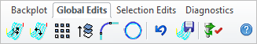
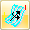
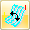

Available in: |
Xpress |
Standard |
Expert |
Professional |
Premium |
These edits apply the changes to the entire toolpath.
 Global Edits tab, Toolpath Editor - Premium Configuration Shown |
Clicking on this button will bring up a Transform Toolpath dialog that allows the transformation of the toolpath. Toolpaths can be moved, rotated, scaled and mirrored. |
Clicking on this button allows the reversal of the direction of the toolpath. All engage motions are changed to retract motions and all retract motions are converted to engage motions. |
Once a toolpath is generated, you can create multiple instances of the toolpath in XY by clicking on this button and bringing up the following Instance Toolpath dialog. |
Once a toolpath is generated, you can create multiple instances of the toolpath in Z by clicking on this button and bringing up the following Z Instance Toolpath dialog. |
Clicking on this button will bring up the Fit Arcs to Toolpath dialog that allows fitting of circular motions to point-to-point toolpath motions. |
Clicking on this button will bring up the Linearized Toolpath dialog. This option is used to optimize the toolpath. A tolerance value can be specified and this will remove any additional toolpath points, which are less than the tolerance specified. |
Clicking on this performs an undo operation and restores the toolpath back to its original un-edited state. |
Saves the edited toolpaths. |
Used to Optimize Feedrates in corners. Allows you to specify feedrate percentages for geometric conditions. |